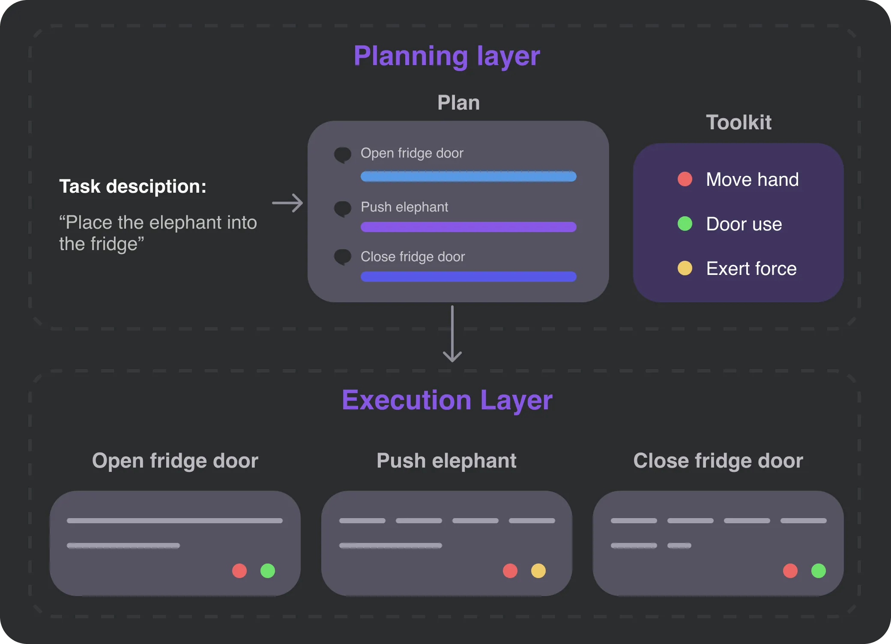

Dive Deep into Lyvo
Traditional automation frameworks require detailed step-by-step instructions. Lyvo is fully automatic and intelligent - you simply describe your goal, and it autonomously determines the optimal execution path and provides the finial result end-to-end.
Concepts
Traditional automation frameworks typically require you to specify exact steps to ensure stable execution: “click here,” “type there,” “wait for 2 seconds.” Lyvo, however, takes an entirely different approach. Instead of focusing on specific actions, it allows you to describe the goal you want to accomplish, and then Lyvo determines how to execute it efficiently.
Lyvo is built on three key principles:
1. Planning
Instead of writing detailed instructions, you describe your goal in plain language. For example:
const workflow = await lyvo.generate( "List all PDF files modified in the last week, extract their titles, and create a summary spreadsheet");Behind the scenes, Lyvo:
- Analyzes the task to identify required capabilities (File operations, PDF processing, spreadsheet creation)- Breaks it down into logical subtasks- Determines the correct order of operations- Selects appropriate tools for each stepThis planning happens before any actual execution, allowing Lyvo to create a complete, validated plan that you can inspect or modify if needed.
2. Hierarchical structure
Lyvo has a hierarchical structure:
- Planning layer: excels at breaking down complex tasks into actionable steps
- Operation layer: is proficient in using tools effectively to execute tasks
This layered structure, known as the “Hierarchical planning,” is crucial for the following reasons:
- It ensures automation reliability by validating plans before execution.
- It allows for flexibility in adapting to changing conditions during execution.
- It enables independent adjustments to either the planning or execution layers without affecting the other.

3. Tool Integration and Hooks
The real work in Lyvo happens through tools - discrete units of capability that know how to perform specific operations. But unlike traditional automation libraries, Lyvo’s tools are self-describing. They tell the framework:
- What they can do
- What information they need
- What conditions they require
Meanwhile, hooks let you monitor and control the automation process at multiple levels, from high-level workflow progress to individual tool operations.
Exploring through an Example
Let’s see these concepts in action by building something real. We’ll create a workflow that processes directory contents, but pay attention to how Lyvo’s architectural principles manifest in the code.
Environment
First, create a new project and install dependencies:
mkdir lyvo-democd lyvo-demopnpm install @lyvo-ai/lyvo dotenvYou’ll need an API key from Anthropic to use Claude, which powers Lyvo’s language understanding. Create a .env file:
ANTHROPIC_API_KEY=your_api_key_hereBuilding the Workflow
Here’s our complete example, which we’ll break down piece by piece:
import { Lyvo } from "@lyvo-ai/lyvo";import { loadTools } from "@lyvo-ai/lyvo/nodejs";import { WorkflowParser } from "@lyvo-ai/lyvo";import dotenv from "dotenv";import fs from "fs/promises";
dotenv.config();
Lyvo.tools = loadTools();
async function main() { // Initialize Lyvo with specific LLM configuration const lyvo = new Lyvo({ llm: "claude", // Explicitly choose Claude as our LLM apiKey: process.env.ANTHROPIC_API_KEY, modelName: "claude-3-5-sonnet-20241022", // Use Sonnet for balanced performance maxTokens: 4096, // Adjust token limit if needed });
// Generate a workflow from natural language description const workflow = await lyvo.generate( "List the contents of the current directory and save them to a file called contents.txt" );
// Save the generated workflow for inspection const workflowJson = WorkflowParser.serialize(workflow); await fs.writeFile("workflow.json", workflowJson); console.log("Generated workflow saved to workflow.json");
// Execute with monitoring hooks const result = await lyvo.execute(workflow, { hooks: { // Monitor subtask progress beforeSubtask: async (subtask, context) => { console.log(`Starting subtask: ${subtask.name}`); console.log( `Available tools:`, subtask.action.tools.map((t) => t.name) ); return true; // Return false to skip this subtask }, // Monitor individual tool usage beforeToolUse: async (tool, context, input) => { console.log(`Using tool ${tool.name} with input:`, input); return input; // Can modify input before tool executes }, afterSubtask: async (subtask, context, result) => { console.log(`Completed ${subtask.name} with result:`, result); }, }, });
console.log("Workflow completed:", result);}
main().catch(console.error);Let’s examine what’s happening here:
-
Framework Initialization
const lyvo = new Lyvo({llm: "claude",apiKey: process.env.ANTHROPIC_API_KEY,modelName: "claude-3-5-sonnet-20241022",});We’re setting up Lyvo with Claude 3.5 Sonnet, a balanced model good for most tasks. You might choose other models based on your needs:
claude-3-opus-20240229for complex tasks requiring deep understandingclaude-3-5-haiku-20241022for simpler tasks where speed is important
-
Workflow Generation
const workflow = await lyvo.generate("List the contents of the current directory and save them to a file called contents.txt");This is where Lyvo’s natural language understanding shines. It analyzes the request and creates a structured plan. Let’s look at the generated workflow:
{"id": "directory-contents","name": "List and Save Directory Contents","nodes": [{"id": "list-contents","action": {"type": "prompt","name": "getDirectoryContents","tools": ["execute_command"]}},{"id": "save-file","dependencies": ["list-contents"],"action": {"type": "prompt","name": "saveToFile","tools": ["file_operations"]}}]}Notice how Lyvo has:
- Identified two main tasks (listing contents and saving)
- Established the correct dependency (can’t save before listing)
- Selected appropriate tools for each task
-
Execution with Hooks
const result = await lyvo.execute(workflow, {hooks: {beforeSubtask: async (subtask, context) => {console.log(`Starting subtask: ${subtask.name}`);return true;},},});Hooks provide visibility and control over execution. You can:
- Monitor progress
- Modify inputs and outputs
- Skip tasks conditionally
- Handle errors gracefully
Extending with Custom Tools
One of Lyvo’s most powerful features is its extensibility. The following example requires TypeScript to run. Here’s how you can add custom capabilities:
import { Tool, InputSchema } from "@lyvo-ai/lyvo/types";
class DirectoryFormatter implements Tool { name = "format_directory"; description = "Format directory listing with size and date information";
input_schema: InputSchema = { type: "object", properties: { entries: { type: "array", description: "Array of directory entries", items: { type: "object", properties: { name: { type: "string", description: "Name of the file or directory", }, size: { type: "integer", description: "Size of the file in bytes", }, modifiedAt: { type: "string", description: "Last modification date in ISO 8601 format (e.g., '2024-01-08T15:30:00Z')", }, }, required: ["name", "size", "modifiedAt"], }, }, format: { type: "string", enum: ["simple", "detailed"], description: "Output format style - 'simple' shows only names, 'detailed' includes size and modification date", default: "simple", }, }, required: ["entries"], };
async execute(context, params) { const { entries, format = "simple" } = params as any;
if (format === "simple") { return entries.map((entry) => entry.name).join("\n"); }
return entries .map( (entry) => `${entry.name} - ${entry.size} bytes - ${entry.modifiedAt}` ) .join("\n"); }}This tool showcases several important principles:
-
Self-Description The tool describes its capabilities and requirements through its
name,description, andinput_schema. This enables Lyvo to:- Understand when to use the tool
- Validate inputs before execution
- Generate appropriate tool combinations
-
Type Safety Using TypeScript interfaces ensures the tool integrates properly with the framework:
import { Tool, InputSchema } from "@lyvo-ai/lyvo/types"; -
Context Awareness Tools receive an execution context that provides access to:
- Shared state
- Environment information
- Other tools’ results
After creating a tool, register it with Lyvo:
lyvo.registerTool(new DirectoryFormatter());Now you can use it in workflows:
const workflow = await lyvo.generate( "List the directory contents in detailed format, including file sizes");To see the full example in action, save format-dir.ts, set up the Typescript environment, and run:
tsx format-dir.tsThe Built-in Tool Ecosystem
Lyvo comes with a rich set of built-in tools, organized by environment:
Browser Extension Tools
Tools for browser automation including:
- Web search and content extraction
- Tab management and navigation
- Element interaction and form filling
- Screenshot capture
- File export
Web Tools
A subset of browser automation tools that work in web environments:
- Element interaction
- Content extraction
- Screenshot capture
- File export
Node.js Tools
Tools for system automation:
- File operations (read/write)
- Command execution
Fellou Browser Tools
Tools for computer control in the Fellou browser environment:
- Mouse and keyboard control
- Screen capture
- System interaction
Each environment provides its own appropriate set of tools based on the available capabilities and security constraints. For complete details on available tools and their usage, see:
- Available Tools for a comprehensive reference
- Tool System Overview for understanding tool concepts
- Browser Use Guide for browser automation details
- Computer Use Guide for system automation details
Moving Beyond the Basics
Now that you understand Lyvo’s core concepts, you can explore more advanced topics:
Advanced Workflow Control
- Hook System for fine-grained execution control
- Error handling and recovery strategies
- State management between nodes
- Parallel execution of independent tasks
Tool Development
- Creating environment-specific tools
- Tool composition and chaining
- Handling asynchronous operations
- Error handling best practices
Environment Integration
Each of these topics is covered in depth in our detailed guides. The concepts you’ve learned here provide the foundation for understanding these more advanced capabilities.
Next Steps
Ready to dive deeper? Here’s where to go next:
- Explore browser automation in the Browser Extension Guide
- Study the Tool System in depth
- Learn about advanced patterns in the Hook System
- Understand how Lyvo adapts to different environments in Environment-Aware Architecture